Project 02 · AME 308
Drone FEA & CAD — Structural Analysis in Siemens NX
AME 308 · CAD & Finite Element Analysis · University of Southern California · Spring 2024
Course
AME 308 — CAD & FEA
Software
Siemens NX
Material
Polyethylene (Propeller)
Load Case
15 N·mm Torque
Constraint
Cylindrical — Fixed Radial & Axial, Free Rotation
Contents
Project Overview
This project was completed in AME 308: CAD and Finite Element Analysis at USC. The objective was to reverse-engineer, fully model, and structurally analyze a commercial quadcopter drone — a Sky Viper Nano — using Siemens NX. The project was completed in a team, with each member responsible for specific sub-assemblies. My personal contributions included the battery assembly drawing, the motion analysis, and the project Gantt chart.
The full CAD model comprised individual part files for the propeller, upper and lower motor housings, battery, and complete drone body — all assembled with proper mating constraints. Engineering drawings were produced for each part and the assembly, following ASME Y14.5 GD&T standards, with section cuts, dimensioning, and title blocks completed in Siemens NX drafting.
The primary structural analysis focused on the drone propeller under 15 N·mm torque loading. A cylindrical constraint was applied at the propeller hub — fixed in radial and axial directions, free in rotation — simulating the boundary condition of a motor shaft. Four mesh refinements were run from coarse to fine (0.4–0.6 mm element sizes), tracking max averaged Von Mises stress, max unaveraged stress, and max tip displacement to establish mesh convergence. Results plateaued at iteration 3–4, confirming solution independence from further mesh refinement.
A motion analysis was also performed on the full assembly, simulating all four propellers spinning simultaneously — run both with and without friction — to characterize propeller dynamics and angular sweep paths over a 10-second window.
Engineering Drawings & CAD Assembly
Seven formal engineering drawings were produced in Siemens NX Drafting covering the propeller, upper motor housing, lower motor housing, assembled motor, battery assembly, full drone assembly, and exploded assembly view. All drawings follow ASME standards with proper section cuts, GD&T callouts, isometric views, and title blocks. The battery assembly (image 6 below) was drawn entirely by me.

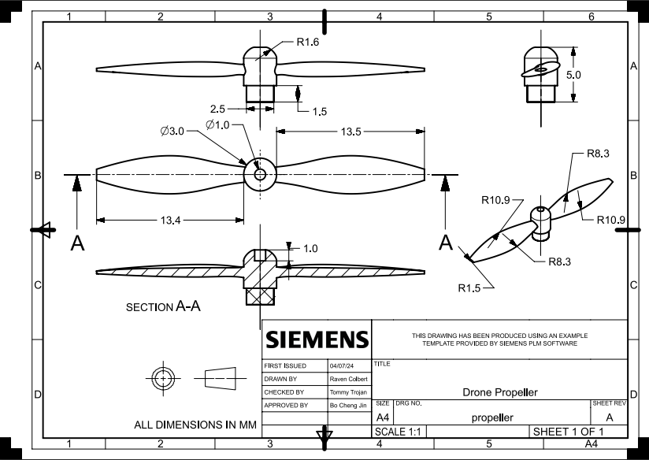
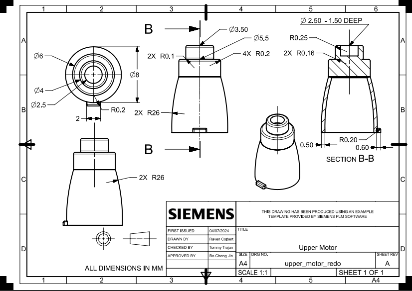
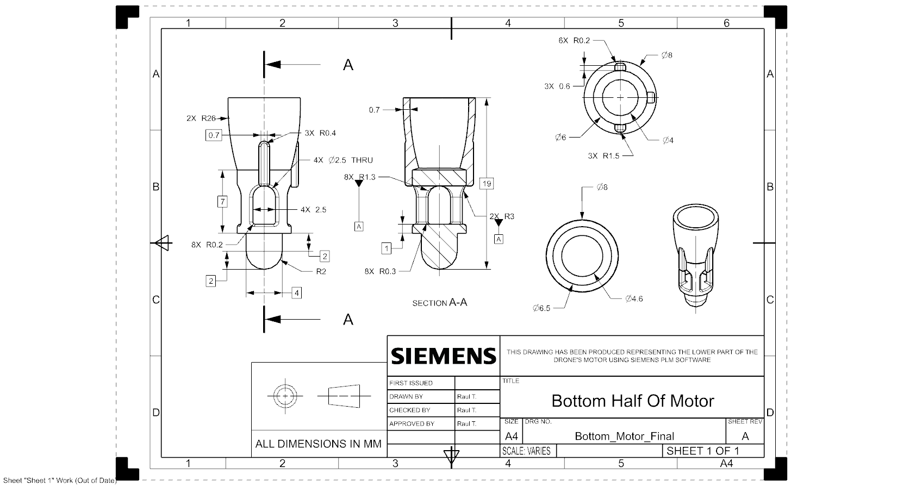
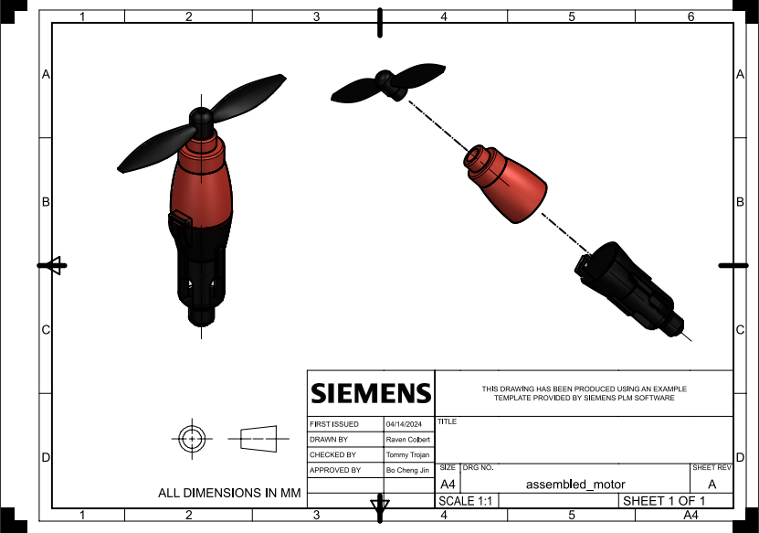
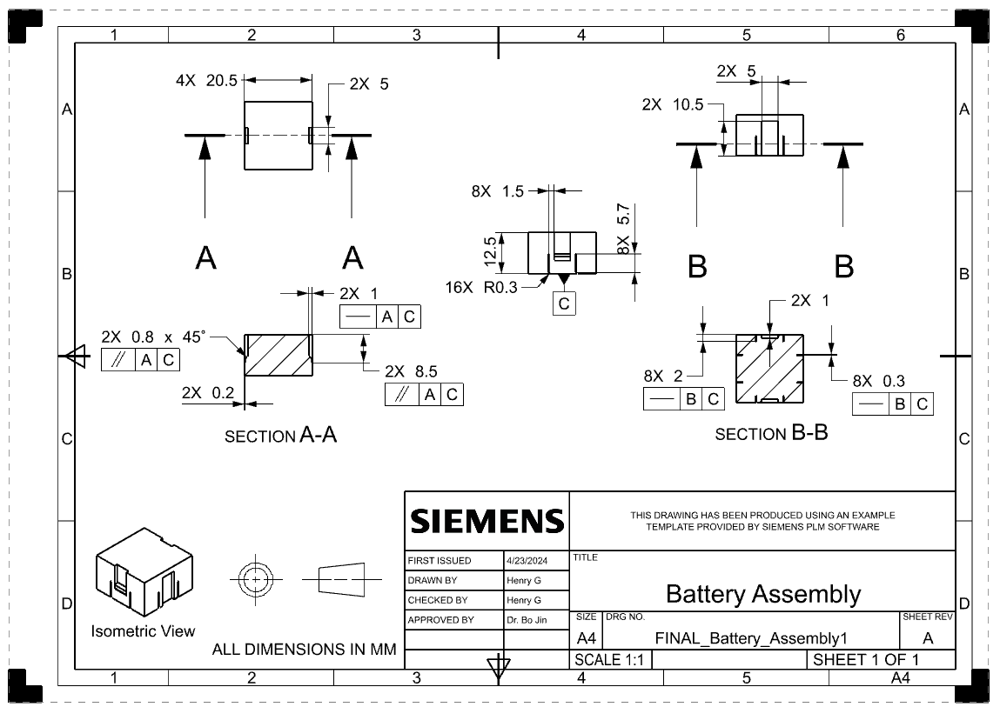
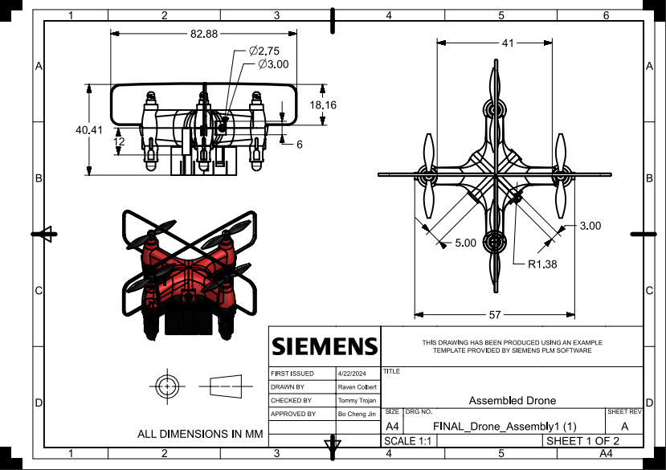
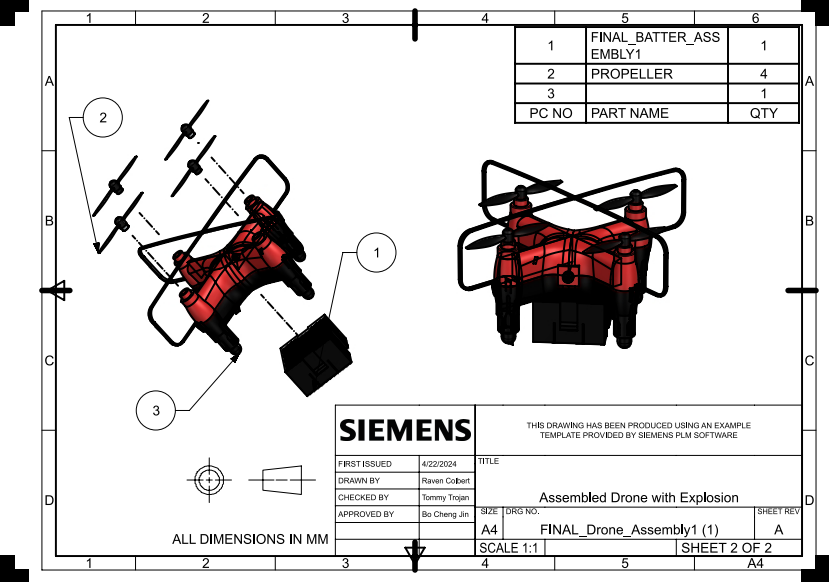
Siemens NX Drafting · ASME Y14.5 GD&T · Battery assembly drawn by Henry Glover · Click to enlarge
FEA — Propeller Stress & Mesh Convergence
Finite element analysis was performed on the drone propeller modeled as polyethylene under a 15 N·mm applied torque. A cylindrical constraint was applied at the propeller hub — fixed radial and axial displacement, with free rotation about the propeller axis — to accurately replicate the motor shaft boundary condition.
Four mesh refinement iterations were run with element sizes ranging from 0.4 to 0.6 mm, reaching up to 252,000 elements and 233,177 nodes. Outputs tracked across all iterations included max unaveraged Von Mises stress, max averaged stress, and max tip displacement. The convergence rate plot shows the solution stabilizing from 33.1% at iteration 1 down to 30.74% at iteration 4, confirming mesh-independent results. The final max Von Mises stress of 1.991 MPa and tip displacement of 0.0451 mm (0.15% deflection ratio) both confirm the propeller remains safely in the linear elastic regime.
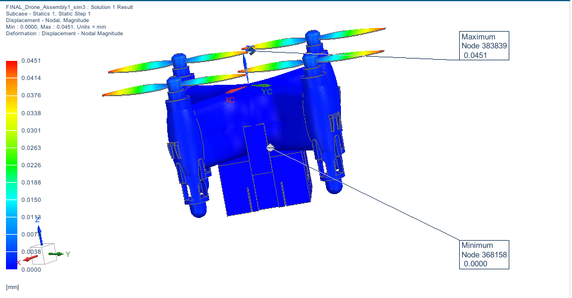
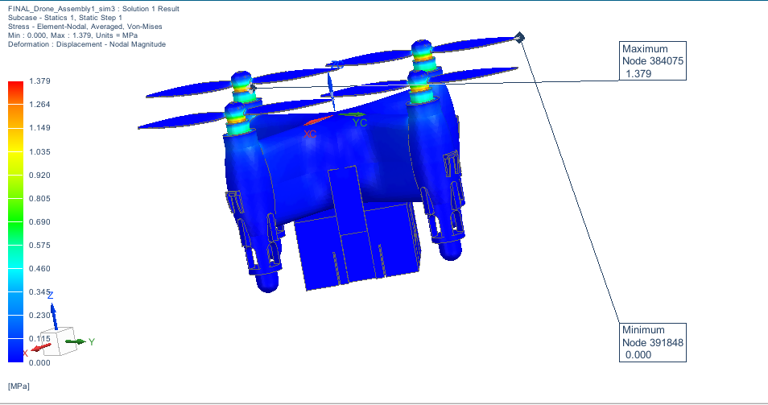
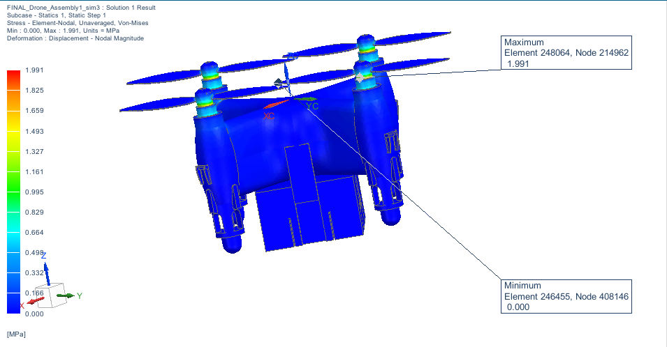
Von Mises stress contours — blue = 0 MPa, yellow-red = peak 1.991 MPa at propeller tips
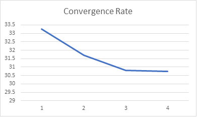
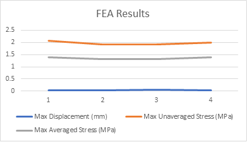
Left: convergence rate across 4 mesh iterations · Right: max displacement, averaged & unaveraged Von Mises stress vs. iteration
Motion Analysis — Propeller Dynamics
A motion analysis was run on the full drone assembly in Siemens NX Motion, simulating all four propellers spinning simultaneously. Two cases were analyzed: without friction and with friction applied at each motor shaft joint. The motion was simulated over a 10-second window to characterize propeller rotational behavior and angular sweep paths. The blue arc traces in the screenshots show the swept motion history of each propeller blade at the captured time step.
The frictionless case shows symmetric, uniform arc sweeps across all four propellers. When friction is introduced, asymmetric behavior and phase differences emerge between propellers, which is visible in the diverging arc patterns — a realistic artifact of differential friction torque at each joint.
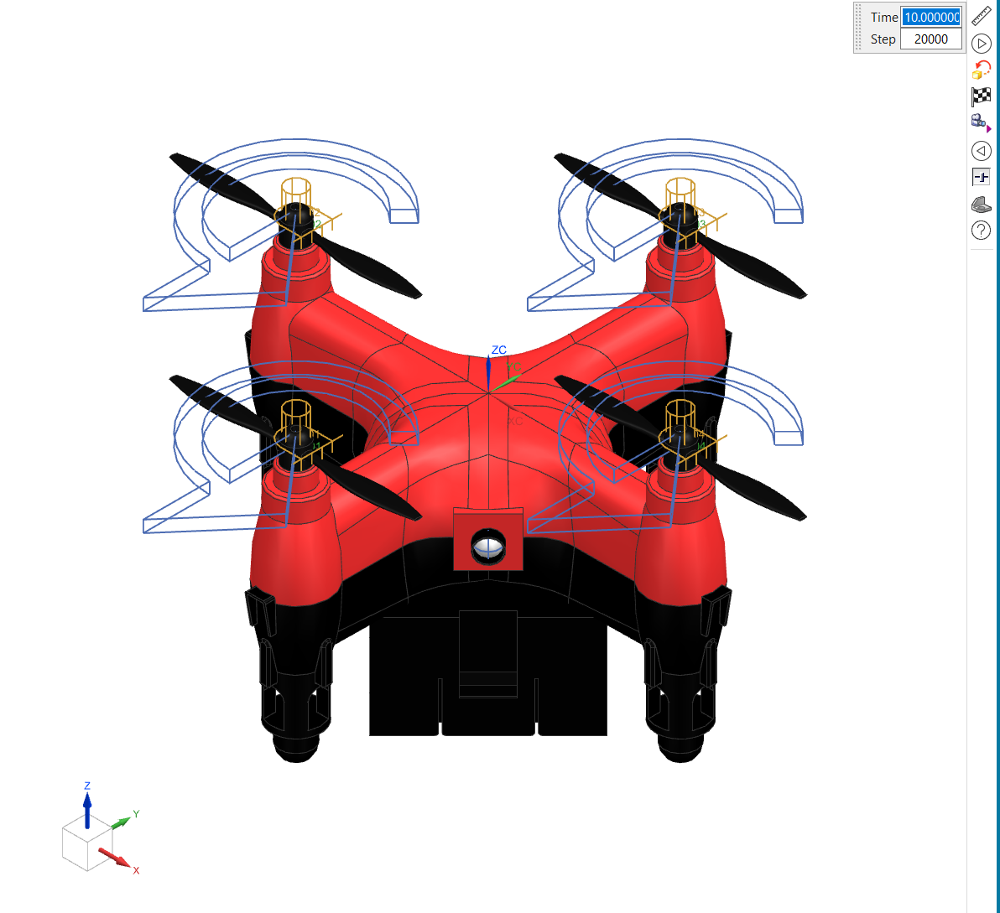
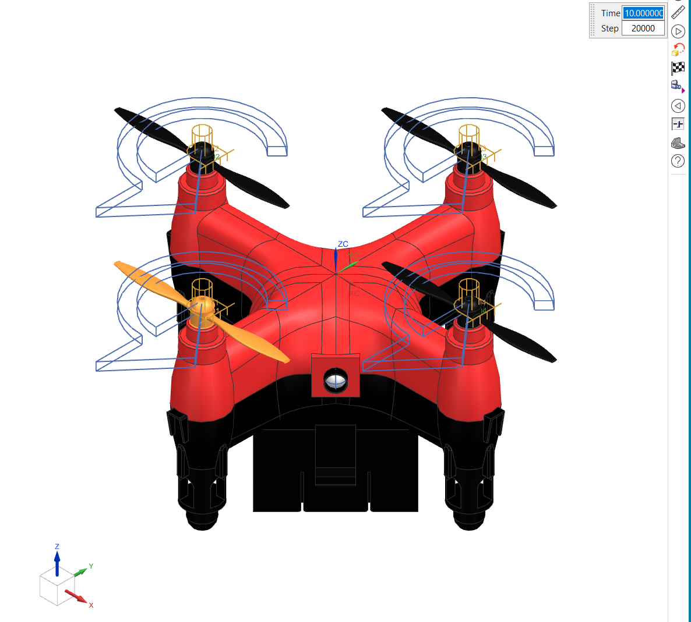
Siemens NX Motion · 10-second simulation window · With and without joint friction · Blue arcs = swept motion history
Downloads
AME 308 — Final Presentation
Full slide deck · CAD drawings, FEA results, convergence plots, motion analysis · Spring 2024
AME 308 — Full Written Report
Complete project report · Methodology, FEA analysis, mesh convergence study, motion analysis results · Spring 2024